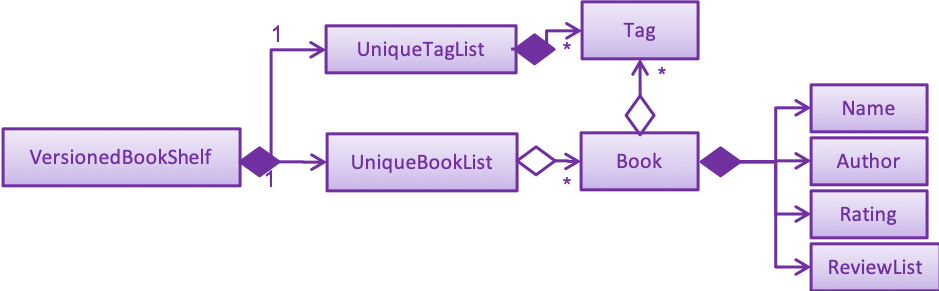

By: Team W11-4 Since: Jun 2019 Licence: MIT
1. Introduction
BookSquirrel is for those who want to keep a record of books they’ve read. More importantly, BookSquirrel is optimized for those who prefer to work with a Command Line Interface (CLI) while still having the benefits of a Graphical User Interface (GUI). If you can type fast, BookSquirrel can get your contact management tasks done faster than traditional GUI apps.
2. Setting up
2.1. Prerequisites
-
JDK
9or laterJDK 10on Windows will fail to run tests in headless mode due to a JavaFX bug. Windows developers are highly recommended to use JDK9. -
IntelliJ IDE
IntelliJ by default has Gradle and JavaFX plugins installed.
Do not disable them. If you have disabled them, go toFile>Settings>Pluginsto re-enable them.
2.2. Setting up the project in your computer
-
Fork this repo, and clone the fork to your computer
-
Open IntelliJ (if you are not in the welcome screen, click
File>Close Projectto close the existing project dialog first) -
Set up the correct JDK version for Gradle
-
Click
Configure>Project Defaults>Project Structure -
Click
New…and find the directory of the JDK
-
-
Click
Import Project -
Locate the
build.gradlefile and select it. ClickOK -
Click
Open as Project -
Click
OKto accept the default settings -
Open a console and run the command
gradlew processResources(Mac/Linux:./gradlew processResources). It should finish with theBUILD SUCCESSFULmessage.
This will generate all the resources required by the application and tests. -
Open
MainWindow.javaand check for any code errors-
Due to an ongoing issue with some of the newer versions of IntelliJ, code errors may be detected even if the project can be built and run successfully
-
To resolve this, place your cursor over any of the code section highlighted in red. Press ALT+ENTER, and select
Add '--add-modules=…' to module compiler optionsfor each error
-
-
Repeat this for the test folder as well (e.g. check
HelpWindowTest.javafor code errors, and if so, resolve it the same way)
2.3. Verifying the setup
-
Run the
seedu.address.MainAppand try a few commands -
Run the tests to ensure they all pass.
2.4. Configurations to do before writing code
2.4.1. Configuring the coding style
This project follows oss-generic coding standards. IntelliJ’s default style is mostly compliant with ours but it uses a different import order from ours. To rectify,
-
Go to
File>Settings…(Windows/Linux), orIntelliJ IDEA>Preferences…(macOS) -
Select
Editor>Code Style>Java -
Click on the
Importstab to set the order-
For
Class count to use import with '*'andNames count to use static import with '*': Set to999to prevent IntelliJ from contracting the import statements -
For
Import Layout: The order isimport static all other imports,import java.*,import javax.*,import org.*,import com.*,import all other imports. Add a<blank line>between eachimport
-
Optionally, you can follow the UsingCheckstyle.adoc document to configure Intellij to check style-compliance as you write code.
2.4.2. Updating documentation to match your fork
After forking the repo, the documentation will still have the SE-EDU branding and refer to the cs2103-ay1819s2-w11-4/main repo.
If you plan to develop this fork as a separate product (i.e. instead of contributing to cs2103-ay1819s2-w11-4/main), you should do the following:
-
Configure the site-wide documentation settings in
build.gradle, such as thesite-name, to suit your own project. -
Replace the URL in the attribute
repoURLinDeveloperGuide.adocandUserGuide.adocwith the URL of your fork.
2.4.3. Setting up CI
Set up Travis to perform Continuous Integration (CI) for your fork. See UsingTravis.adoc to learn how to set it up.
After setting up Travis, you can optionally set up coverage reporting for your team fork (see UsingCoveralls.adoc).
| Coverage reporting could be useful for a team repository that hosts the final version but it is not that useful for your personal fork. |
Optionally, you can set up AppVeyor as a second CI (see UsingAppVeyor.adoc).
| Having both Travis and AppVeyor ensures your App works on both Unix-based platforms and Windows-based platforms (Travis is Unix-based and AppVeyor is Windows-based) |
2.4.4. Getting started with coding
When you are ready to start coding,
-
Get some sense of the overall design by reading Section 3.1, “Architecture”.
3. Design
3.1. Architecture
The Architecture Diagram given above explains the high-level design of the App. Given below is a quick overview of each component.
The .pptx files used to create diagrams in this document can be found in the diagrams folder. To update a diagram, modify the diagram in the pptx file, select the objects of the diagram, and choose Save as picture.
|
Main has only one class called MainApp. It is responsible for,
-
At app launch: Initializes the components in the correct sequence, and connects them up with each other.
-
At shut down: Shuts down the components and invokes cleanup method where necessary.
Commons represents a collection of classes used by multiple other components.
The following class plays an important role at the architecture level:
-
LogsCenter: Used by many classes to write log messages to the App’s log file.
The rest of the App consists of four components.
Each of the four components
-
Defines its API in an
interfacewith the same name as the Component. -
Exposes its functionality using a
{Component Name}Managerclass.
For example, the Logic component (see the class diagram given below) defines it’s API in the Logic.java interface and exposes its functionality using the LogicManager.java class.
How the architecture components interact with each other
The Sequence Diagram below shows how the components interact with each other for the scenario where the user issues the command delete 1.
deleteBook 1 commandThe sections below give more details of each component.
3.2. UI component

API : Ui.java
The UI consists of a MainWindow that is made up of parts e.g.CommandBox, ResultDisplay, BookListPanel, ReviewListPanel, StatusBarFooter, ReviewBrowserPanel etc. All these, including the MainWindow, inherit from the abstract UiPart class.
The UI component uses JavaFx UI framework. The layout of these UI parts are defined in matching .fxml files that are in the src/main/resources/view folder. For example, the layout of the MainWindow is specified in MainWindow.fxml
The UI component,
-
Executes user commands using the
Logiccomponent. -
Listens for changes to
Modeldata so that the UI can be updated with the modified data.
3.3. Logic component
API :
Logic.java
-
Logicuses theBookShelfParserclass to parse the user command. -
This results in a
Commandobject which is executed by theLogicManager. -
The command execution can affect the
Model(e.g. adding a book). -
The result of the command execution is encapsulated as a
CommandResultobject which is passed back to theUi. -
In addition, the
CommandResultobject can also instruct theUito perform certain actions, such as displaying help to the user.
Given below is the Sequence Diagram for interactions within the Logic component for the execute("deleteBook 1") API call.

deleteBook 1 Command3.4. Model component

API : Model.java
The Model,
-
stores a
UserPrefobject that represents the user’s preferences. -
stores the BookShelf data.
-
exposes an unmodifiable
ObservableList<Book>that can be 'observed' e.g. the UI can be bound to this list so that the UI automatically updates when the data in the list change. -
does not depend on any of the other three components.
As a more OOP model, we can store a Tag list in BookShelf, which Book can reference. This would allow BookShelf to only require one Tag object per unique Tag, instead of each Book needing their own Tag object. An example of how such a model may look like is given below. |
3.5. Storage component

API : Storage.java
The Storage component,
-
can save
UserPrefobjects in JSON format and read it back. -
can save the BookShelf data in JSON format and read it back.
-
both the data of books and reviews will be saved.
-
users are not supposed to touch the data file (file inside the
datafolder) directly. If the user insists on doing so, the data might be corrupted. -
users are not supposed to add data files into the app manually. If the user accidentally corrupts the data file, he or she may have to reinstall the app and all data will get lost.
-
developers can edit the data file for the purpose of testing.
3.6. Common classes
Classes used by multiple components are in the seedu.addressbook.commons package.
4. Implementation
This section describes some noteworthy details on how certain features are implemented.
4.1. SortBook feature
4.1.1. Current Implementation
The sortBook mechanism is facilitated by VersionedBookShelf.
It extends BookShelf with the sort function which will sort the UniqueBookList. UniqueBookList implemented the BookList as ObservableList<Book>. sortBook command sort the booklist in specify order by implementing the Comparator<Book>.
Additionally, it uses/implements the following operations:
-
VersionedBookShelf#sort()— It callsUniqueBookListsortBooks function and notifies the listeners. -
BookShelf#indicateModified()— Notifies listeners that the bookshelf has been modified. -
UniqueBookList#sortBooks()— Implement the comparator, callObservableList<Book>and pass in the comparator. -
ObservableList<Book>#sort()— sort the internalList is specify order.
Given below is an example usage scenario and how the sortBook mechanism behaves at each step.
Step 1. The user launches the application for the first time. The VersionedBookShelf will be initialized with the initial bookshelf state, and the currentStatePointer pointing to that single bookshelf state.
Step 2. The user executes sortBook st/rating command to sort all the books in the bookshelf in ascending order. The command will be pass to SortBookCommand Parser to convert it to SortBook command, the parser will check the correctness of the command. If the command is in an incorrect format, the parser will show correct command instruction to the user, otherwise, the parser will call the constructor of SortBook command.
Step 3. SortBookCommand#execute will be call, it will check whether the Bookshelf is empty before proceed to call ModelManager#sort().
| If the Bookshelf is empty, CommandException(MESSAGE_BOOK_LIST_EMPTY) will be thrown. |
Step 4. If everything is correct, VersionedBookShelf#sort() will be called. It will execute UniqueBookList#sortBooks and BookShelf#indicateModified will be called after the list is been sorted to notify the listener that display data has been modified.
Step 5. ObservableList<Book> was implemented in UniqueBookList as internal list. UniqueBookList#sortBooks will call ObservableList<Book>#sort to sort the internal list by providing custom Comparator.
Step 6. ` model#commitBookShelf()` will be executed to store the current Bookshelf into List<ReadOnlyBookShelf> for support undo/redo command after the list is sorted and notify the listener.
4.1.2. Design Considerations
Aspect: Sorting algorithm implemented.
-
Alternative 1 (current choice): Sorts using library sorting method.
-
Pros: Easy to implement, easy to maintain.
-
Cons: The sorting method is too general, can have a better sorting algorithm.
-
-
Alternative 2: Using custom sorting method.
-
Pros: more custom, may improve performance.
-
Cons: hard to maintain and easy to produce bugs.
-
Aspect: Data structure to support the sort commands
-
Alternative 1 (current choice): Sorts with the complete list.
-
Pros: Easy to implement, as the list coming with sort function.
-
Cons: May have performance issues in terms of speed, as we need to sort the whole list.
-
-
Alternative 2: Sorts with sub-list that available to the user.
-
Pros: It is faster than the first choice as we only need to sort a partial list.
-
Cons: The sub-list is not supported sort function, it’s hard and time consumed to manipulate sorting and put it back to sub-list.
-
4.2. Undo/Redo feature
4.2.1. Current Implementation
The undo/redo mechanism is facilitated by VersionedBookShelf.
It extends BookShelf with an undo/redo history, stored internally as a BookStateList and currentStatePointer.
Additionally, it implements the following operations:
-
VersionedBookShelf#commit()— Saves the current bookshelf state in its history. -
VersionedBookShelf#undo()— Restores the previous bookshelf state from its history. -
VersionedBookShelf#redo()— Restores a previously undone bookshelf state from its history.
These operations are exposed in the Model interface as Model#commitBookShelf(), Model#undoBookShelf() and Model#redoBookShelf() respectively.
Given below is an example usage scenario and how the undo/redo mechanism behaves at each step.
Step 1. The user launches the application for the first time. The VersionedBookShelf will be initialized with the initial bookshelf state, and the currentStatePointer pointing to that single bookshelf state.

Step 2. The user executes deleteBook 1 command to delete the first book in the bookshelf. The deleteBook command calls Model#commitBookShelf(), causing the modified state of the Bookshelf after the deleteBook 1 command executes to be saved in the BookShelfStateList, and the currentStatePointer is shifted to the newly inserted Bookshelf state.

Step 3. The user executes addBook n/David … to add a new book. The addBook command also calls Model#commitBookShelf(), causing another modified address book state to be saved into the BookShelfStateList.

If a command fails its execution, it will not call Model#commitBookShelf(), so the bookshelf state will not be saved into the BookShelfStateList.
|
Step 4. The user now decides that adding the book was a mistake, and decides to undo that action by executing the undo command. The undo command will call Model#undoBookShelf(), which will shift the currentStatePointer once to the left, pointing it to the previous bookshelf state, and restores the bookshelf to that state.

If the currentStatePointer is at index 0, pointing to the initial bookshelf state, then there are no previous bookshelf states to restore. The undo command uses Model#canundoBookShelf() to check if this is the case. If so, it will return an error to the user rather than attempting to perform the undo.
|
The following sequence diagram shows how to undo operation works:

The redo command does the opposite — it calls Model#redoBookShelf(), which shifts the currentStatePointer once to the right, pointing to the previously undone state, and restores the bookshelf to that state.
If the currentStatePointer is at index BookShelfStateList.size() - 1, pointing to the latest Bookshelf state, then there are no undone bookshelf states to restore. The redo command uses Model#canredoBookShelf() to check if this is the case. If so, it will return an error to the user rather than attempting to perform the redo.
|
Step 5. The user then decides to execute the command listBook. Commands that do not modify the Bookshelf, such as listBook, will usually not call Model#commitBookShelf(), Model#undoBookShelf() or Model#redoBookShelf(). Thus, the BookShelfStateList remains unchanged.

Step 6. The user executes clear, which calls Model#commitBookShelf(). Since the currentStatePointer is not pointing at the end of the BookShelfStateList, all bookshelf states after the currentStatePointer will be purged. We designed it this way because it no longer makes sense to redo the addBook n/David … command. This is the behavior that most modern desktop applications follow.

The following activity diagram summarizes what happens when a user executes a new command:

4.2.2. Design Considerations
Aspect: How undo & redo executes
-
Alternative 1 (current choice): Saves the entire Bookshelf.
-
Pros: Easy to implement.
-
Cons: May have performance issues in terms of memory usage.
-
-
Alternative 2: Individual command knows how to undo/redo by itself.
-
Pros: Will use less memory (e.g. for
deleteBook, just save the book being deleted). -
Cons: We must ensure that the implementation of each individual command is correct.
-
Aspect: Data structure to support the undo/redo commands
-
Alternative 1 (current choice): Use a list to store the history of Bookshelf states.
-
Pros: Easy for new Computer Science student undergraduates to understand, who are likely to be the new incoming developers of our project.
-
Cons: Logic is duplicated twice. For example, when a new command is executed, we must remember to update both
HistoryManagerandVersionedBookShelf.
-
-
Alternative 2: Use
HistoryManagerfor undo/redo-
Pros: We do not need to maintain a separate list, and just reuse what is already in the codebase.
-
Cons: Requires dealing with commands that have already been undone: We must remember to skip these commands. Violates Single Responsibility Principle and Separation of Concerns as
HistoryManagernow needs to do two different things.
-
4.3. Logging
We are using java.util.logging package for logging. The LogsCenter class is used to manage the logging levels and logging destinations.
-
The logging level can be controlled using the
logLevelsetting in the configuration file (See Section 4.4, “Configuration”) -
The
Loggerfor a class can be obtained usingLogsCenter.getLogger(Class)which will log messages according to the specified logging level -
Currently log messages are output through:
Consoleand to a.logfile.
Logging Levels
-
SEVERE: Critical problem detected which may possibly cause the termination of the application -
WARNING: Can continue, but with caution -
INFO: Information showing the noteworthy actions by the App -
FINE: Details that is not usually noteworthy but may be useful in debugging e.g. print the actual list instead of just its size
4.4. Configuration
Certain properties of the application can be controlled (e.g user prefs file location, logging level) through the configuration file (default: config.json).
4.5. AddBook feature
4.5.1. Current Implementation
The addBook mechanism is facilitated by BookShelf.
It contains UniqueBookList in which all the book data are stored and duplicates are not allowed. Books with same book name are considered as duplicates.
Additionally, it uses the following operations from BookShelf:
-
model#hasBook()— Check if the book already exists in the Bookshelf. -
model#addBook()— To add the new book into Bookshelf. -
model#commitBookShelf()— Saves the current Bookshelf state for undo/redo..
These operations are exposed to the Model interface.
Given below is an example usage scenario and how the addBook mechanism behaves at each step.
Step 1. The user launches the application for the first time. The VersionedBookShelf will be initialized with the initial bookshelf state, and the currentStatePointer pointing to that single bookshelf state.
Step 2. The user executes addBook n/Alice a/HR m/5 tag/fantasy command to add the book called Alice, written by HR, with a rating of 5 and tag of fantasy in the Bookshelf. The addBook command calls Model#hasBook(), checking if the book already exists in the bookshelf.
If the book already exists, CommandException(MESSAGE_DUPLICATE_BOOK) will be thrown. It will not call Model#commitBookShelf(), so the bookshelf state will not be saved into the BookShelfStateList.
|
Step 4. The bookshelf now adds the book to the Bookshelf after making sure there are no duplicates, and calls Model#commitBookShelf(), causing the modified state of the Bookshelf after the addBook command executes to be saved in the BookShelfStateList
4.5.2. Design Considerations
Aspect: How duplicate of book is defined
-
Alternative 1 (current choice): Books with same book name are considered as duplicates.
-
Pros: Easy to support other commands such as addReview which search for the book based on its name.
-
Cons: User may encounter trouble if they read two books with the same name but written by different authors.
-
-
Alternative 2: Books with multiple identical fields (eg. book name and author, book name and rating, etc) are considered as the same book.
-
Pros: Able to store books with same but different in other fields.
-
Cons: Causing trouble in executing other commands like addReview as more parameters must be provided to search for a certain book.
-
Aspect: Data structure to support the addBook command
-
Alternative 1 (current choice): Saves the entire book as one object contains different components such as author, rating, etc.
-
Pros: Easy to implement delete and other features that change an entire book.
-
Cons: Maybe more difficult to implement the summary feature which needs to obtain statistics of all separate components, eg. find the most popular author.
-
-
Alternative 2: Components stored as individual objects.
-
Pros: Easier to obtain statistics regarding each component.
-
Cons: It is hard to manage book object as we need to find a way to connect all components together.
-
4.6. EditBook feature
4.6.1. Current Implementation
The editBook mechanism is facilitated by BookShelf.
It contains UniqueBookList in which all the book data are stored and duplicates are not allowed. Books with same book name are considered as duplicates.
Additionally, it uses the following operations from BookShelf:
-
model#hasBook()— Check if the book already exists in the Bookshelf. -
model#setBook()— To set a book with field values provided. -
model#commitBookShelf()— Saves the current Bookshelf state for undo/redo..
These operations are exposed to the Model interface.
Given below is an example usage scenario and how the addBook mechanism behaves at each step.
Step 1. The user launches the application for the first time. The VersionedBookShelf will be initialized with the initial bookshelf state, and the currentStatePointer pointing to that single bookshelf state.
Step 2. The user executes editBook 1 n/Alice a/HR m/5 tag/fantasy command to edit the first book present in the Bookshelf to be a book called Alice, written by HR, with a rating of 5 and tag of fantasy in the Bookshelf. The addBook command calls Model#hasBook(), checking if the book already exists in the bookshelf.
If the new book name already exists, CommandException(MESSAGE_DUPLICATE_BOOK) will be thrown. It will not call Model#commitBookShelf(), so the bookshelf state will not be saved into the BookShelfStateList.
|
Step 4. The bookshelf now set the fields of the first book to the new ones provided, and calls Model#commitBookShelf(), causing the modified state of the Bookshelf after the addBook command executes to be saved in the BookShelfStateList
4.6.2. Design Considerations
Aspect: How editBook is executed
-
Alternative 1 (current choice): Use the index to figure out the book user wishes to edit.
-
Pros: Easy to select the book user wish to edit with the support of our UI.
-
Cons: A listBook command might be needed before executing editBook if the current filtered Bookshelf is empty
-
-
Alternative 2: Use exact book name to figure out the book user wishes to edit.
-
Pros: No need to first filter out a non-empty Bookshelf.
-
Cons: Causing trouble for the user to type in the full name of the book.
-
4.7. ListBook Feature
4.7.1. Current Implementation
The current version of listBook command works to help the user to search books that satisfy certain criteria. The user can look for books by giving keywords of book name, author, tag or rating.
This would be handy when there are many books on the bookshelf. It also makes the app more user-friendly as the user sometimes cannot remember the exact full name of a book but only know a few things about the book desired.
Compared to the list command in the address book app, our listBookCommand is an implementation of the combination of list and find and even more functionally helpful, as it accepts more filtering criteria than the original command does.
Given below is an example usage and how listBook feature behaves at each step.
Step 1. The user launches the application for the first time. The VersionedBookShelf will be initialized with the initial bookshelf state, and the currentStatePointer pointing to that single bookshelf state.
Step 2. The user executes listBook n/Life.
Step 3. The ListBookCommandParser parses this command. It will first create some predicates according to the input and then use theses predicates to create a ListBookCommand. The exception will be thrown if the command is invalid. The command is created by the logic manager as follows.

Step 4. The ListBookCommand will be executed. The command checks all the book in the BookShelf, selects out books whose name contain Life based on BookNameContainsKeywordPredicate.
The sequence diagram of the whole process is as follows.

4.7.2. Design Considerations
Aspect: How to select books.
-
Alternative 1 (current choice): Only books match all criteria provided will be selected. For example, if the user gives 2 book name keywords and 2 ratings, only books matching at least 1 name keyword and at least 1 rating will be selected. Books match 1 name keyword but no ratings will not be considered.
-
Pros: Easy to test and manage.
-
Cons: Such search techniques may fail to provide the user with enough information.
-
-
Alternative 2: Books that match at least one criteria will be selected. For example, if the user gives 2 book name keywords and 2 ratings, books that match 1 name keyword but no ratings will still be selected.
-
Pros: More likely to provide the user with the book that the user is looking for.
-
Cons: Hard to test and manage. Such a design also fails to narrow down search results when the user is providing more keywords for the targeted book.
-
4.8. Summary Feature
4.8.1. Current Implementation
The summary feature is a command works to summarize the books in the bookshelf. The user can have a rough overview of what he/she has read.
Given below is an example of usage and how the summary feature works.
Step 1. The user launches the application for the first time. The VersionedBookShelf will be initialized with the initial bookshelf state, and the currentStatePointer pointing to that single bookshelf state.
Step 2. The user executes summary
Step 3. The SummaryCommandParser parses this command.
Step 4. The SummaryCommandParser`returns an `SummaryCommand. The exception will be thrown if the command is invalid.
Step 5. The SummaryCommand executes. The command will traverse all books in the bookshelf, checks, if there are authors or tags, appear more than once and give relative details. The command will also show the highest rating of books on the bookshelf.
4.8.2. Design Consideration
Aspect: Component to fetch the data
-
Alternative 1 (current choice): Model manager in charge of data processing, then return the result to the command.
-
Pros: This prevents the command from accessing data managed by the model manager, thus independency of different parts is guaranteed.
-
Cons: More methods are introduced into the model manager. To include more information in the summary, not only the summary command should be modified, but also more information query methodS should be added in The
Model. This somehow break the abstraction.
-
-
Alternative 2: Model manager passes the whole bookshelf to the command, then command process the data according to this list.
-
Pros: More flexible as the command can extract any information it desires. Whenever we want the summary to include more information, we just directly fetch the data from the copy of the bookshelf.
-
Cons: This approach is unsafe and may lead to more bugs as it violates the principle of independence.
-
-
Alternative 3: Model manager creates a list of the copies of the books in the bookshelf and passes it to the command.
-
Pros: More flexible as the command can read whatever information desired, while keep the bookshelf safe from any unintended modification.
-
Cons: The manager no longer has control over what information is accessible to the command, thus may still expose some sensitive information. Besides, making a copy of the whole list is not practical when there are many books in the bookshelf.
-
4.9. AddReview Feature
4.9.1. Current Implementation
Given below is an example usage and how addReview feature behaves at each step.
Step 1. The user launches the application for the first time. The VersionedBookShelf will be initialized with the initial bookshelf state, and the currentStatePointer pointing to that single bookshelf state.
Step 2. The user executes addReview n/Alice in Wonderland rt/Carroll has depicted a unique world I hadn’t seen before r/Alice’s Adventures in Wonderland by Lewis Carroll is a story about Alice who falls down a rabbit hole and lands into a fantasy world that is full of weird, wonderful people and animals.
Step 3. The AddReviewCommandParser parses this command and creates a Review object based on the parameters in user input.
Step 4. The AddReviewCommandParser`returns an `AddReviewCommand. The exception will be thrown if the command is invalid.
Step 5. The AddReviewCommand executes. The command checks if the book to which the review is added exists in the BookShelf, based on BookNameContainsExactKeywordPredicate. If the book does not exist, an exception is thrown.
Step 6. If the book exists, the review is added to the review list of the Bookshelf.
4.9.2. Design Considerations
Aspect: Data structure to store Reviews
-
Alternative 1 (current choice): Use a List to store Reviews
-
Pros: There will be an order for the reviews added based on time created. More clear to users.
-
Cons: May have unforeseen bugs or implications.
-
-
Alternative 2: Use a Set to store all Reviews, just like tags.
-
Pros: Easy to code and manage because it is the same implementation as tags.
-
Cons: Set does not allow duplicate reviews. Need to check for duplicate reviews added.
-
Aspect: Where to store Reviews
-
Alternative 1 (current choice): Have another independent list for reviews in the bookshelf.
-
Pros: Much easier to implement.
-
Cons: Reviews and Books now have exactly the same structure, which violates the DRY principle.
-
-
Alternative 2: Use a Set within a Book, just like tags.
-
Pros: The model makes more sense because Reviews belong to Books.
-
Cons: Makes it more difficult to link with the UI component.
-
Aspect: Constraints on Review Parameters
-
ReviewTitle has the same constraints as BookName, less than 50 characters.
-
ReviewMessage should be less than or equal to 400 characters. This is because of the BookBrowserPanel used to display the ReviewMessage currently cannot hold more than 400 characters. The longer text also makes it more difficult to edit in the small CommandBox. Future releases would consider adding enhanced review input panel to make the review feature more user-friendly.
Aspect: Auto-creation of Date for the Review
-
Currently, the constructor of Review automatically assigns a dateCreated to it. This feature is provided for the convenience of the user. An overloaded constructor is available where the date can be passed in as a parameter, to be used in testing.
4.10. ListReview Feature
4.10.1. Current Implementation
Given below are an example of usage and program behavior:
Step 1. The user executes listReview 1
Step 2. The ListReviewCommandParser parses this command and returns a new ListReviewCommand with the specified index.
Step 3. The ListReviewCommand executes. The book with the specified index is selected.
Step 4. Reviews of the selected book will be displayed in the rightmost panel.
Alternatively, the user can click the book to select it.
4.11. ListAllReviews Feature
4.11.1. Current Implementation
The ListAllReviews Feature uses the same implementation as the ListBook feature:
Step 1. The user executes listAllReviews
Step 2. A new ListAllReviewsCommand is returned by the BookShelfParser
Step 3. The ListAllReviewsCommand executes. Review list panel is updated to show all reviews.
4.11.2. Design Considerations
Aspect: Whether to combine ListAllReviews command with ListReview command
-
Alternative 1 (current choice): not to combine.
-
Pros: Command is more logical and user-friendly because it is actually not intuitive to have two functions combined in one ListReview command.
-
Cons: Inconsistency with the ListBook command may cause confusion.
-
-
Alternative 2: Combine.
-
Pros: Consistency.
-
Cons: Command is not intuitive, and takes extra time to implement review predicates.
-
4.12. SelectReview Feature
4.12.1. Current Implementation
Selection of review is implemented the same way as the selection of a book.
In addition, review message of a selected review will be displayed in the book browser panel.
Step 1. The user executes selectReview 1
Step 2. The SelectReviewCommandParser parses this command and returns a new SelectReviewCommand with index 1.
Step 3. The SelectReviewCommand executes. The review with the specified index is selected.
Step 4. The BookBrowserPanel listens to the change in the selected review and displays its review message.
4.13. DeleteReview Feature
4.13.1. Current Implementation
The review is deleted based on the index.
Step 1. The user executes deleteReview 1
Step 2. The DeleteReviewCommandParser parses this command and returns a new DeleteReviewCommand with index 1.
Step 3. The DeleteReviewCommand executes. The review with the specified index is deleted.
4.13.2. Other Design Considerations
Whether to Implement EditReview
It seems natural to implement EditReview as one component of the CRUD features. However, editing an existing review requires re-typing everything and seems painstaking to the user. It makes much more sense to just delete the original review and add a new one. Hence. EditReview is currently not implemented.
5. Documentation
We use asciidoc for writing documentation.
| We chose asciidoc over Markdown because asciidoc, although a bit more complex than Markdown, provides more flexibility in formatting. |
5.1. Editing Documentation
See UsingGradle.adoc to learn how to render .adoc files locally to preview the end result of your edits.
Alternatively, you can download the AsciiDoc plugin for IntelliJ, which allows you to preview the changes you have made to your .adoc files in real-time.
5.2. Publishing Documentation
See UsingTravis.adoc to learn how to deploy GitHub Pages using Travis.
5.3. Converting Documentation to PDF format
We use Google Chrome for converting the document to PDF format, as Chrome’s PDF engine preserves hyperlinks used in webpages.
Here are the steps to convert the project documentation files to PDF format.
-
Follow the instructions in UsingGradle.adoc to convert the AsciiDoc files in the
docs/directory to HTML format. -
Go to your generated HTML files in the
build/docsfolder, right click on them and selectOpen with→Google Chrome. -
Within Chrome, click on the
Printoption in Chrome’s menu. -
Set the destination to
Save as PDF, then clickSaveto save a copy of the file in PDF format. For best results, use the settings indicated in the screenshot below.

5.4. Site-wide Documentation Settings
The build.gradle file specifies some project-specific asciidoc attributes which affects how all documentation files within this project are rendered.
Attributes left unset in the build.gradle file will use their default value if any.
|
| Attribute name | Description | Default value |
|---|---|---|
|
The name of the website. If set, the name will be displayed near the top of the page. |
not set |
|
URL to the site’s repository on GitHub. Setting this will add a "View on GitHub" link in the navigation bar. |
not set |
|
Define this attribute if the project is an official SE-EDU project. This will render the SE-EDU navigation bar at the top of the page, and add some SE-EDU-specific navigation items. |
not set |
5.5. Per-file Documentation Settings
Each .adoc files may also specify some file-specific asciidoc attributes which affects how the file is rendered.
Asciidoctor’s built-in attributes may be specified and used as well.
Attributes left unset in .adoc files will use their default value, if any.
|
| Attribute name | Description | Default value |
|---|---|---|
|
Site section that the document belongs to.
This will cause the associated item in the navigation bar to be highlighted.
One of: * Official SE-EDU projects only |
not set |
|
Set this attribute to remove the site navigation bar. |
not set |
5.6. Site Template
The files in docs/stylesheets are the CSS stylesheets of the site.
You can modify them to change some properties of the site’s design.
The files in docs/templates controls the rendering of .adoc files into HTML5.
These template files are written in a mixture of Ruby and Slim.
|
Modifying the template files in the |
6. Testing
6.1. Running Tests
There are three ways to run tests.
| The most reliable way to run tests is the 3rd one. The first two methods might fail some GUI tests due to platform/resolution-specific idiosyncrasies. |
Method 1: Using IntelliJ JUnit test runner
-
To run all tests, right-click on the
src/test/javafolder and chooseRun 'All Tests' -
To run a subset of tests, you can right-click on a test package, test class, or a test and choose
Run 'ABC'
Method 2: Using Gradle
-
Open a console and run the command
gradlew clean allTests(Mac/Linux:./gradlew clean allTests)
| See UsingGradle.adoc for more info on how to run tests using Gradle. |
Method 3: Using Gradle (headless)
Thanks to the TestFX library we use, our GUI tests can be run in the headless mode. In the headless mode, GUI tests do not show up on the screen. That means the developer can do other things on the Computer while the tests are running.
To run tests in headless mode, open a console and run the command gradlew clean headless allTests (Mac/Linux: ./gradlew clean headless allTests)
6.2. Types of tests
We have two types of tests:
-
GUI Tests - These are tests involving the GUI. They include,
-
System Tests that test the entire App by simulating user actions on the GUI. These are in the
systemtestspackage. -
Unit tests that test the individual components. These are in
seedu.address.uipackage.
-
-
Non-GUI Tests - These are tests not involving the GUI. They include,
-
Unit tests targeting the lowest level methods/classes.
e.g.seedu.address.commons.util.StringUtilTest -
Integration tests that are checking the integration of multiple code units (those code units are assumed to be working).
e.g.seedu.address.storage.StorageManagerTest -
Hybrids of unit and integration tests. These tests are checking multiple code units as well as how they are connected together.
e.g.seedu.address.logic.LogicManagerTest
-
6.3. Troubleshooting Testing
Problem: HelpWindowTest fails with a NullPointerException.
-
Reason: One of its dependencies,
HelpWindow.htmlinsrc/main/resources/docsis missing. -
Solution: Execute Gradle task
processResources.
7. Dev Ops
7.1. Build Automation
See UsingGradle.adoc to learn how to use Gradle for build automation.
7.2. Continuous Integration
We use Travis CI and AppVeyor to perform Continuous Integration on our projects. See UsingTravis.adoc and UsingAppVeyor.adoc for more details.
7.3. Coverage Reporting
We use Coveralls to track the code coverage of our projects. See UsingCoveralls.adoc for more details.
7.4. Documentation Previews
When a pull request has changed asciidoc files, you can use Netlify to see a preview of how the HTML version of those asciidoc files will look like when the pull request is merged. See UsingNetlify.adoc for more details.
7.5. Making a Release
Here are the steps to create a new release.
-
Update the version number in
MainApp.java. -
Generate a JAR file using Gradle.
-
Tag the repo with the version number. e.g.
v0.1 -
Create a new release using GitHub and upload the JAR file you created.
7.6. Managing Dependencies
A project often depends on third-party libraries. For example, Bookshelf depends on the Jackson library for JSON parsing. Managing these dependencies can be automated using Gradle. For example, Gradle can download the dependencies automatically, which is better than these alternatives:
-
Include those libraries in the repo (this bloats the repo size)
-
Require developers to download those libraries manually (this creates extra work for developers)
Appendix A: Product Scope
Target user profile:
-
has a need to manage a significant number of book reviews
-
prefer desktop apps over other types
-
can type fast
-
prefers typing over mouse input
-
is reasonably comfortable using CLI apps
Value proposition: manage book reviews faster than a typical mouse/GUI driven app
Appendix B: User Stories
Priorities: High (must have) - * * *, Medium (nice to have) - * *, Low (unlikely to have) - *
| Priority | As a … | I want to … | So that I can… |
|---|---|---|---|
|
new user |
see usage instructions |
refer to instructions when I forget how to use the App |
|
user |
add a new book |
record a book I have read |
|
user |
delete a book |
remove entries that I no longer need |
|
user |
find books by certain criteria such as name |
locate details and reviews of the books without having to go through the entire list |
|
user |
exist the program |
|
|
user |
select a review |
so that I can view the review |
|
user |
save |
able to save data in local |
|
user |
show history |
able to see what you did |
|
user |
undo |
able to undo your operation |
|
user |
redo |
able to redo your undo |
|
user |
clear |
clear all entires |
|
user |
guideline |
by typing help to show all commands |
|
user |
sort |
sort the book list in specified order |
Appendix C: Use Cases
(For all use cases below, the System is the BookSquirrel and the Actor is the user, unless specified otherwise)
Use
C.1. Use case: Delete book
MSS
-
User requests to list books
-
BookSquirrel shows a list of books
-
User requests to delete a specific book in the list
-
BookSquirrel deletes the book and all its reviews
The use case ends.
Extensions
-
2a. The list is empty.
The use case ends.
-
3a. The given index is invalid.
-
3a1. BookSquirrel shows an error message. Use case resumes at step 2.
-
Appendix D: Non Functional Requirements
-
Should work on any mainstream OS as long as it has Java
9or higher installed. -
Should be able to hold up to 1000 books without a noticeable sluggishness in performance for typical usage.
-
A user with above average typing speed for regular English text (i.e. not code, not system admin commands) should be able to accomplish most of the tasks faster using commands than using the mouse.
Appendix F: Instructions for Manual Testing
Given below are instructions to test the app manually.
| These instructions only provide a starting point for testers to work on; testers are expected to do more exploratory testing. |
F.1. Launch and Shutdown
-
Initial launch
-
Download the jar file and copy into an empty folder
-
Double-click the jar file
Expected: Shows the GUI with a set of sample books and reviews. The window size may not be optimum.
-
-
Saving window preferences
-
Resize the window to an optimum size. Move the window to a different location. Close the window.
-
Re-launch the app by double-clicking the jar file.
Expected: The most recent window size and the location is retained.
-
F.2. Listing books in the bookshelf
-
Search and display the books in the bookshelf
-
Prerequisites: The following test cases work as described only when you haven’t deleted or modified Madame Bovary and Pride and Prejudice in the bookshelf. If you have, please only use the following test cases as examples and generate your own test cases accordingly.
-
Test case:
listBook
Expected: All books in the bookshelf are shown in the leftmost column -
Test case:
listBook n/Madame
Expected: Madame Bovary should de displayed in the left column. Any other book whose name contains Madame will also be displayed. -
Test case:
listBook n/Madame n/Madame
Expected: Repeated keywords are acceptable. Madame Bovary should de displayed in the left column. Any other book whose name contains Madame will also be displayed. -
Test case:
listBook n/Madame n/Bovary
Expected: Madame Bovary and any other books contain Madame or Bovary will be displayed. -
Test case:
listBook n/Madame n/Pride m/6 m/8
The book Madame Bovary and Pride and Prejudice will be displayed. Some other books will also be displayed according to what you’ve added into the bookshelf. For example, if you’ve added Madame Butterfly with a rating 6 into the bookshelf, it will also be displayed. But if you added Madame Serpent with rating 7 into the bookshelf, it will not be displayed as it does not match 'at least one criteria for very dimensions'. -
Some incorrect listBook commands to try
-
listBook n/Madame Bovary
Keyword given is not a single word. Error isshown in the status message. -
listBook n/Madame c/nonsense
Prefixc/is not recognized, soMadame c/nonsensewill be regarded as a whole keyword for book name. Since whitespace and '/' are not allowed for keywords, the input is invalid. Error is shown in the status message. -
listBook m/12
12 is not a valid range for the rating. Error is shown in the status message.
-
-
F.3. Deleting a book
-
Deleting a book while all books are listed
-
Prerequisites: List all book using the
listBookcommand. All books present in the bookshelf are shown in the list. -
Test case:
deleteBook 1
Expected: First book is deleted from the list. Details of the deleted book shown in the status message. Timestamp in the status bar is updated. -
Test case:
deleteBook 0
Expected: No book is deleted. Error details are shown in the status message. Status bar remains the same. -
Other incorrect delete commands to try:
deleteBook
Expected: Similar to previous.
-
F.4. Sorting the booklist
-
Sorting the current booklist in a certain order.
-
Prerequisites: List all book using the
listBookcommand. Multiple books on the list. -
Test case:
SortBook st/rating
Expected: booklist will be sorted with the rating in ascending order. -
Test case:
SortBook st/rating st/author o/asc o2/des
Expected: The booklist will be sorted in ascending order, if they are having the same rating then it will be sorted in ascending order of authoro2/deswill be ignored aso/ascis specified. -
Test case:
SortBook st/rating st/author o2/des
Expected: The booklist will be sorted in ascending order, if they are having the same rating then it will be sorted in descending order of author `. -
Some incorrect sort commands to try:
-
sortBook
Error message: Sorting type is not provided. -
sortBook st/name o1/des o2/asc
Error message: Second sorting type does not exist.
-
-
F.5. Saving data
-
Dealing with missing/corrupted data files
-
Data is saved in
bookshelf.json, which is under thedatadirectory. -
After the installation,
bookshelf.jsonis not present. The file is initialized after the main app runs for the first time. At this point, the file is loaded with the sample data. -
The data will not be saved automatically. If the user does not exit the program using the
exitcommand, the changes will not be kept. -
If the developer modifies the storage component, to make the data structure and content consistent with the newly updated code, The developer should delete the file before relaunching the app.
-
If the file is corrupted, the developer or the user can manually fix the bookshelf.json to restore the data. However, he or she should stick to the format specified or the data will not be read properly. Therefore, modifying the
bookshelf.jsondirectly is not encouraged as such behavior will cause unexpected bugs.
-
F.6. Adding a review
-
Adding a review with the target book existing in bookshelf
-
Test case:
addReview n/Pride and Prejudice rt/Belief Systems r/Most of the characters believe that nothing matters more than social class…
Expected: a review titled "Belief Systems" should appear in the review list.
-
-
Adding a review with the target book not existing in bookshelf
-
Test case:
addReview n/Invalid Bookname rt/Belief Systems r/Most of the characters believe that nothing matters more than social class…
Expected: the following error message should appear: "The target book does not exist in the book shelf".
-
-
Other invalid commands to try:
-
Test case:
addReview n/Pride and Prejudice rt/Belief%Systems r/Most of the characters believe that nothing matters more than social class…
Expected: error message: "Review titles should contains only alphanumeric characters, spaces, '*', ',', '.', '?', ''', '()' and '&'. And it should not be blank or have more than 50 characters (space included).". -
Test case:
addReview rt/Belief Systems r/Most of the characters believe that nothing matters more than social class…
Expected: error message: "Invalid command format! addReview: Adds a review to a certain book. Parameters: n/BOOK NAME rt/REVIEW TITLE r/REVIEW Example: addReview n/Alice in Wonderland rt/A great fairytale r/While Lewis Carroll purists will scoff at the aging of his young protagonist…" -
Test case:
addReview n/Pride and Prejudice rt/Belief Systemssssssssssssssssssssssssssssssssssssss r/Most of the characters believe that nothing matters more than social class…
Expected: error message: "Review titles should contains only alphanumeric characters, spaces, '*', ',', '.', '?', ''', '()' and '&'. And it should not be blank or have more than 50 characters (space included).".
-
F.7. Deleting a review
-
Deleting a review while all reviews are listed
-
Prerequisites: List all reviews using the
listAllReviewscommand. All reviews present in the bookshelf are shown in the list. -
Test case:
deleteReview 1
Expected: First review is deleted from the list. Timestamp in the status bar is updated. -
Test case:
deleteReview 0
Expected: No review is deleted. Error details are shown in the status message. Status bar remains the same. -
Other incorrect delete commands to try:
deleteReview
Expected: Similar to previous.
-
F.8. Listing reviews
-
Listing a review of a book
-
Prerequisites: 1 or more books are listed in the book list, by the listBook or sortBook command.
-
Test case:
listReview 1Expected: the book with the index is selected. Reviews to that book are listed in the review list. -
Test case:
listReview 0Expected: Error details are shown in the status message. Status bar remains the same.
-
-
Listing all reviews
-
Test case:
listAllReviewsExpected: any selected book is deselected. All reviews in the book shelf are listed in the review list.
-
F.9. Selecting review
-
Selecting a review while all reviews are listed
-
Prerequisites: List all reviews using the
listAllReviewscommand. All reviews present in the bookshelf are shown in the list. -
Test case:
selectReview 1
Expected: First review is selected. The complete review is shown in the selected review panel. -
Test case:
selectReview 0
Expected: No review is selected. Error details are shown in the status message. -
Other incorrect delete commands to try:
selectReview
Expected: Similar to previous.
-